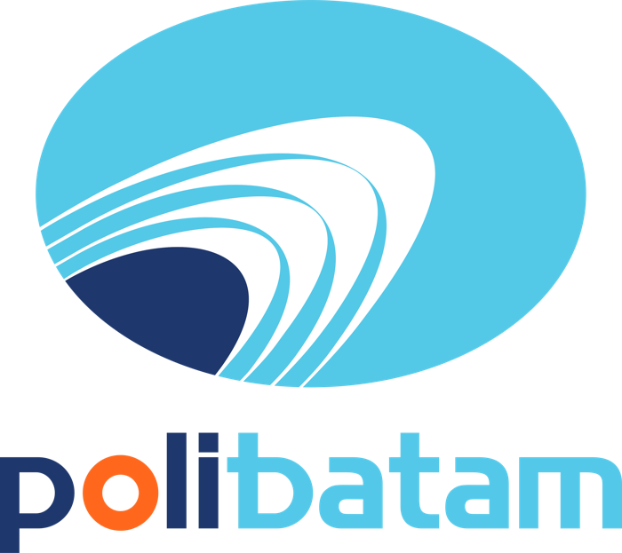

Jarak mata ke layar
– cm

Teknologi Rekayasa Elektronika, Politeknik Negeri Batam
Menunggu data
Pilih Real-time untuk data dari ESP32, atau Demo untuk simulasi.
Jarak mata ke layar
– cm
Cahaya ruangan
– lux
–
Tingkat risiko mata
– / 100
Durasi di depan layar: –
Menunggu halaman kamera...
Sensor HC-SR04: – cm | Kamera laptop (ML): – cm
Buka halaman kamera di laptop untuk melatih dan menjalankan deteksi.
Garis putus-putus: batas Waspada (30) dan Bahaya (65).
Kalimat suara mengikuti jarak, cahaya, dan hasil fuzzy, ditambah pengingat istirahat mata.
Data berasal dari ESP32 lewat broker MQTT.